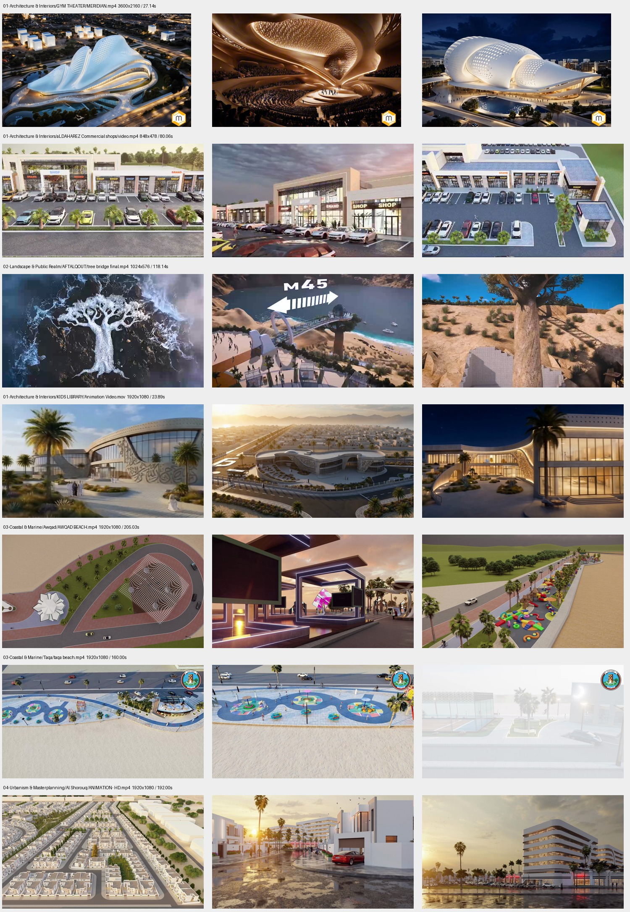
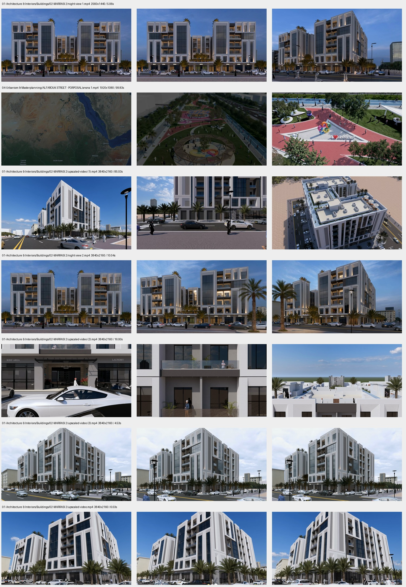

ميرديان: مراجعة الصور والفيديو
التحديث في النسخة الاحتياطية فقط. العربية هي لغة البداية، والإنجليزية متاحة بزر تبديل اللغة. لم يُنشر الموقع ولم تتغير النسخة الأصلية أو ملفات Drive.
الرئيسية · المشاريع · English
فيديو الرئيسية: مراسي السعادة 2 — لوب أمامي وعكسي
المصدر: night view 2.mp4 من مجلد 02-MARRASI 2، بأبعاد أصلية 3840 × 2160. يعرض ثماني ثوانٍ للأمام ثم يعكسها للخلف؛ الدورة نحو 16 ثانية. أُزيل الإطار المكرر عند كل نقطة رجوع لمنع الوقفة والقفزة إلى البداية، وفُحص الانتقال بين الإطارات على طرفي اللوب. نسخة الحاسوب 1920 × 1080 بمعدل 24 إطارًا في الثانية وحجم 11.27 MB؛ نسخة الهاتف 1280 × 720 بمعدل 24 إطارًا في الثانية وحجم 4.10 MB. في الموقع يبدأ بصورة معاينة، مع زر إيقاف وتأثير التمدد عند التمرير.
الألوان والحركة
توحيد السطوع والتشبع لكل صورة مع لون دافئ مشترك؛ دون تغيير تفاصيل العمارة. خُفّض دوران بطاقات صفحة المشاريع وتحريك الصور إلى ربع التأثير السابق، والتكبير من 14% إلى 3.5%. بقيت حركة أقسام الرئيسية وشبكة المشاريع الأصلية. خلفية من نحن تستخدم حتى 30 صورة مختلفة دون تكرار. الخط العربي أصبح Noto Sans Arabic بأوزان متدرجة للعناوين والنصوص، محفوظًا محليًا.
قارن الألوان قبل المعالجة وبعدها
ضُبط السطوع والتشبع لكل صورة، مع طابع دافئ مشترك. المعالجة تخص العرض وتحافظ على هندسة المباني وتفاصيلها؛ لم تُولّد مشاريع بديلة ولم تتغير الصور الأصلية.
المعالجة اللونية مفعّلة
توزيع صور الصفحات
من نحن: Training Center. الخدمات: GIM Theatre. المشاريع: Grand Resort. التخصصات: Tilal District بصورة أوسع للمخطط. التواصل: Children’s Library. الرئيسية تعرض سبعة مشاريع مختارة وصفحة المشاريع تعرض الثلاثين.
صورة واحدة لكل مشروع — 30 مشروعًا
دُمجت المجلدات المتكررة للمسرح ومكتبة الأطفال. معظم الصور تصورات معمارية؛ لا تثبت التنفيذ. لم تُنسب أسماء عملاء أو حالة إنجاز غير موثقة. استُخرجت صورة الجسر من فيديو العميل. لم يظهر محتوى في مجلدي Engineering & Environment وInfrastructure & Mobility.
Al Bahja Hotel
Sep 24, 2026, 04_07_52 PM.png
الأصل المختار: 1672 × 941 بكسل. النسخة المعروضة: 74 KB.
فتح مصدر العميلAl Dahareez Commercial Shops
WhatsApp Image 2024-05-29 at 1.37.42 PM (2).jpeg
الأصل المختار: 1280 × 720 بكسل. النسخة المعروضة: 52 KB.
فتح مصدر العميلChildren’s Library
slide15_image42.png
الأصل المختار: 1183 × 660 بكسل. النسخة المعروضة: 60 KB.
فتح مصدر العميلGIM Theatre
slide21_image57.jpg
الأصل المختار: 2304 × 1280 بكسل. النسخة المعروضة: 45 KB.
فتح مصدر العميلGrand Resort
slide33_image93.jpg
الأصل المختار: 2734 × 1538 بكسل. النسخة المعروضة: 73 KB.
فتح مصدر العميلMorjan Hall
slide10_hdphoto7_HD.png
الأصل المختار: 1536 × 1024 بكسل. النسخة المعروضة: 48 KB.
فتح مصدر العميلSalalah Municipality Buildings
slide27_hdphoto13_HD.png
الأصل المختار: 3840 × 2160 بكسل. النسخة المعروضة: 59 KB.
فتح مصدر العميلScience and Space Oasis
slide12_image30.jpg
الأصل المختار: 1551 × 834 بكسل. النسخة المعروضة: 43 KB.
فتح مصدر العميلTraining Center
slide17_image47.jpg
الأصل المختار: 5376 × 3072 بكسل. النسخة المعروضة: 74 KB.
فتح مصدر العميلWedding Hall
1_21 - Photo.jpg
الأصل المختار: 3840 × 2160 بكسل. النسخة المعروضة: 48 KB.
فتح مصدر العميلAftalkout Rock
slide18_image49.jpg
الأصل المختار: 3840 × 2160 بكسل. النسخة المعروضة: 33 KB.
فتح مصدر العميلAftalkout Viewpoint
slide16_image41.jpg
الأصل المختار: 1205 × 678 بكسل. النسخة المعروضة: 49 KB.
فتح مصدر العميلAl Dahareez Beach
slide23_image65.jpg
الأصل المختار: 1080 × 607 بكسل. النسخة المعروضة: 90 KB.
فتح مصدر العميلAwqad Beach
slide12_image31.jpg
الأصل المختار: 3840 × 2160 بكسل. النسخة المعروضة: 47 KB.
فتح مصدر العميلBarkaa
slide02_image5.jpg
الأصل المختار: 2736 × 1536 بكسل. النسخة المعروضة: 52 KB.
فتح مصدر العميلCoastal Erosion
3.jpg
الأصل المختار: 817 × 613 بكسل. النسخة المعروضة: 75 KB.
فتح مصدر العميلFIC
صورة_تخيلية_للموقع_العام.png
الأصل المختار: 1672 × 941 بكسل. النسخة المعروضة: 116 KB.
فتح مصدر العميلOctagon Beach Walkway
slide31_image88.jpg
الأصل المختار: 2734 × 1538 بكسل. النسخة المعروضة: 72 KB.
فتح مصدر العميلTaqa Beach
slide10_image26.jpg
الأصل المختار: 2734 × 1538 بكسل. النسخة المعروضة: 60 KB.
فتح مصدر العميلAlfarouk Street Proposal
1 (26).png
الأصل المختار: 1536 × 1024 بكسل. النسخة المعروضة: 118 KB.
فتح مصدر العميلJawad District
slide03_image6.jpg
الأصل المختار: 2904 × 1621 بكسل. النسخة المعروضة: 75 KB.
فتح مصدر العميلSedra District
slide08_image20.jpg
الأصل المختار: 1205 × 678 بكسل. النسخة المعروضة: 113 KB.
فتح مصدر العميلTilal District
slide04_image10.png
الأصل المختار: 2752 × 1536 بكسل. النسخة المعروضة: 105 KB.
فتح مصدر العميلMrasi Al Saada 2
slide22_image59.jpg
الأصل المختار: 1596 × 1999 بكسل. النسخة المعروضة: 64 KB.
فتح مصدر العميلSAS Building
sas (1).jpg
الأصل المختار: 3840 × 2160 بكسل. النسخة المعروضة: 80 KB.
فتح مصدر العميلAl Shorouq
dayrender.jpg
الأصل المختار: 7680 × 4320 بكسل. النسخة المعروضة: 95 KB.
فتح مصدر العميلMrasi Al Saada 1
MRASI ALSAADA BUILDING.pdf — صفحة 2
الأصل المختار: 2160 × 2700 بكسل. النسخة المعروضة: 72 KB.
فتح مصدر العميلAl Dabus Building
Al Dahareez Building (1).pdf — صفحة 1
الأصل المختار: 2160 × 3024 بكسل. النسخة المعروضة: 97 KB.
فتح مصدر العميلHamed Alamri Building
Residential Building (3D).pdf — صفحة 17
الأصل المختار: 1080 × 1350 بكسل. النسخة المعروضة: 55 KB.
فتح مصدر العميلAftalqout Bridge
tree bridge final.mp4 — لقطة عند الثانية 75
الأصل المختار: 1024 × 576 بكسل. النسخة المعروضة: 27 KB.
فتح مصدر العميلحدود الفحص
اختيار الصور مبني على المعاينات المتاحة وفتح الصور الأصلية المختارة ومقارنة صور PDF. تمت مقارنة ثلاث لقطات موزعة من كل فيديو من الفيديوهات الأربعة عشر، ثم تنزيل فيديو مكتبة الأطفال وفيديو مراسي السعادة 2 كاملين وفحصهما؛ اختير مراسي لوضوح تفاصيله وهدوء حركته. لم تتم مشاهدة جميع الفيديوهات كاملة أو فتح جميع الملفات الأصلية؛ «الأفضل» يعني الأفضل بين المواد التي أمكن معاينتها.
مقارنة عينات الفيديوهات
كل صف يعرض ثلاث لقطات من فيديو واحد. هذه لوحات مراجعة خارج حزمة النشر.

